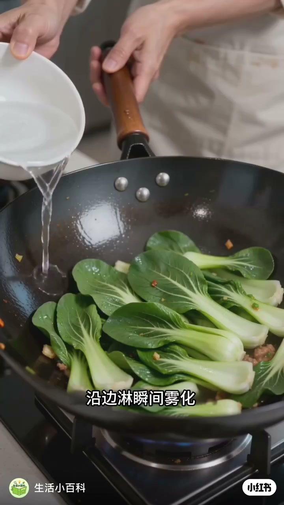
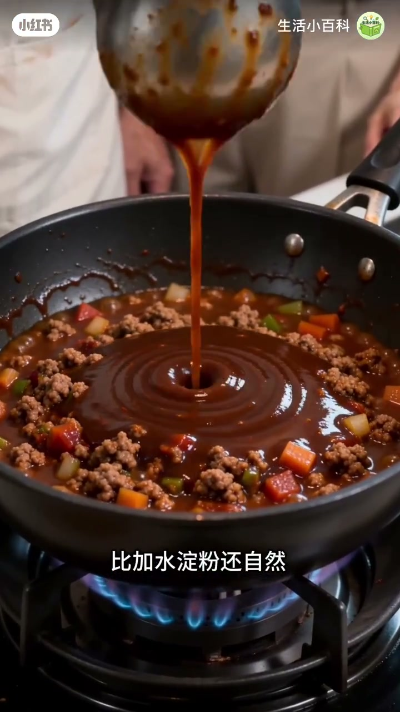
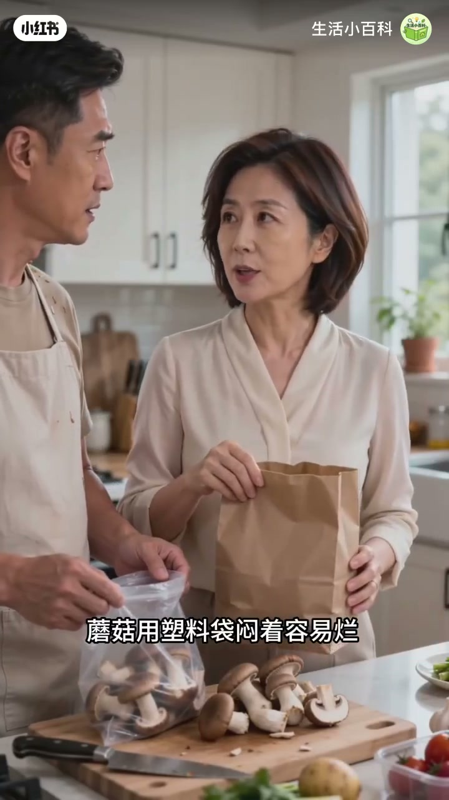

内容要点
「生活小百科」用厨房双人演示四条实用技巧：炒菜沿锅边淋水雾化补汽、煮面水淀粉勾芡更自然、嫩肉粉是木瓜蛋白酶可分解纤维、蘑菇用纸袋而非塑料袋防闷烂。口播极短（Whisper 仅 1 段），内容以画面字幕为准。
知识结构
[00:00→00:10]
沿边淋水
水沿锅边淋下瞬间雾化，避免直接倒菜上变成煮菜。
[00:10→00:20]
煮面水勾芡
煮面水含淀粉，勾芡比加水淀粉更自然。
[00:20→00:30]
嫩肉粉原理
嫩肉粉取自木瓜蛋白酶，分解肉纤维；不必一听「添加剂」就吓跑。
[00:30→00:40]
蘑菇纸袋
塑料袋闷着易烂；纸袋透气，可放一周仍较新鲜。
总结
四条都是「位置/介质」问题：水往哪倒、勾芡用什么水、嫩化靠什么酶、蘑菇装什么袋——方法对了，观感与口感立刻不同。
00:00-00:20炒菜补水 vs 煮面水勾芡
第一招：炒锅沿边淋水，瞬间雾化成汽，补湿度但不把锅温砸垮；字幕对比「直接倒菜上就成煮菜了」，点破加水位置错了的常见误区。
第二招：留一勺煮面水——水里已有淀粉，用来勾芡比临时冲水淀粉更自然。画面舀起浑浊面汤，再切到酱汁收汁效果。

[00:03] 炒锅沿边淋水瞬间雾化，演示正确补水位置
Water poured along the wok edge flashes into steam—showing the right place to add moisture.
[00:09] 对比：水直接倒在菜上会变成煮菜
Contrast: pouring water onto the vegetables turns stir-fry into boiling.

[00:16] 舀起煮面水，说明其中含淀粉可勾芡
Lifting noodle cooking water to show its starch can thicken sauces.
00:20-00:40嫩肉粉与蘑菇保存
第三招：嫩肉粉被解释为木瓜里提取的蛋白酶，作用是分解纤维；男主提出「网上都说是添加剂」的疑虑，女主用成分来源回应。
第四招：蘑菇别闷塑料袋，改用纸袋透气，字幕称可放一周仍新鲜。整段以短对比演示收束，适合收藏当备忘。
[00:25] 嫩肉粉来自木瓜蛋白酶，可分解肉纤维
Meat tenderizer is papaya protease that breaks down meat fibers.

[00:34] 蘑菇改用纸袋存放，避免塑料袋闷烂
Store mushrooms in a paper bag instead of plastic to avoid rotting from trapped moisture.
完整转录（1段）
以下文本由 Whisper medium 模型自动转录，可能存在少量识别误差，已尽可能修正。
加水不都一样吗